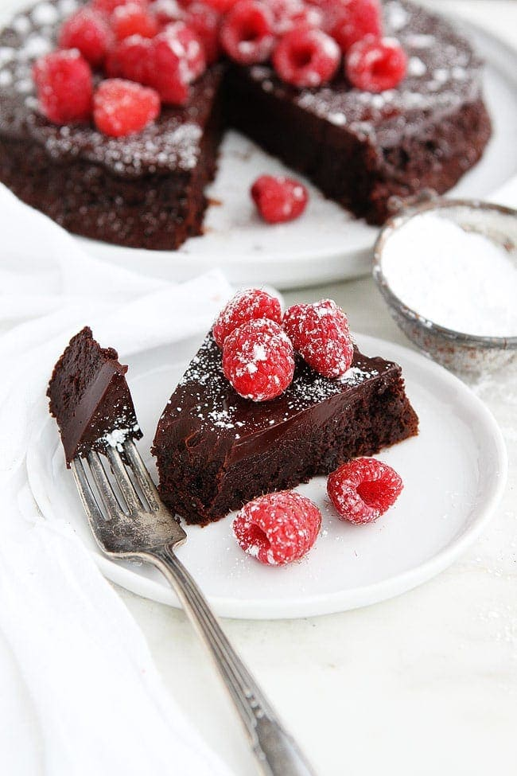

Flourless Chocolate Cake

Description
This flourless chocolate cake is gluten free and low sugar so it's perfect for those with dietary restrictions. Being
low in sugar doesn't make it low in flavor though!
Not sutible for those with egg allergies.
Ingredients
8 large eggs, cold
1 lb dark chocolate bar, chopped
16 tbsp unsalted butter, cut into 16 pads
optional: powdered sugar and/or berries
Instructions
- Preheat oven to 325. Line 8 inch springfoam pan with parchment paper and grease sides of pan.
- Beat eggs at high spead until volume doubles, roughly 5 minutes.
- Melt chocolate and butter together, either in double boiler or microwave.
- Fold in about a third of beaten egs with rubber spatula until only a few streaks are visable.
Fold in half of the remaining egg foam, then the remainder until homogenous.
- Transfer to prepared pan, place roasting pan on oven rack and carefully pour boiling water
halfway up sides of springform pan.
- Bake until cake is slightly risen and edges are beginning to set and a thin glazed crust formed on the surface,
apx 20-25 min.
- Remove springfoam pan from waterbath and set on wire rack, cool to room temp and then refridgerate.
- 30 min prior to serving remove sides of springfoam pan, invert onto sheet of wax paper, peel parchment paper off and
reinvert onto serving platter.
- If desired dust with powdered sugar adn top with berries.